Plot types¶
This section gives an overview of individual plot classes in Chaco. It is divided in three parts: the first part lists all plot classes implementing the X-Y plots interface, the second all plot classes implementing the 2D plots interface, and finally a part collecting all plot types that do not fall in either category. See the section on plot renderers for a detailed description of the methods and attributes that are common to all plots.
The code to generate the figures in this section can be found in
the path tutorials/user_guide/plot_types/ in the examples
directory.
For more complete examples, see also the annotated examples page.
X-Y Plot Types¶
These plots display information in a two-axis coordinate system
and are subclasses of
BaseXYPlot.
The common interface for X-Y plots is described in X-Y Plots interface.
Line Plot¶
Standard line plot implementation. The aspect of the line is controlled by the parameters
line_width- The width of the line (default is 1.0)
line_style- The style of the line, one of ‘solid’ (default), ‘dot dash’, ‘dash’, ‘dot’, or ‘long dash’.
render_style- The rendering style of the line plot, one of ‘connectedpoints’ (default), ‘hold’, or ‘connectedhold’
These images illustrate the differences in rendering style:
renderstyle='connectedpoints'renderstyle='hold'renderstyle='connectedhold'
{kind=link}
{kind=link}
{kind=link}
Scatter Plot¶
Standard scatter plot implementation. The aspect of the markers is controlled by the parameters
marker- The marker type, one of ‘square’(default), ‘circle’, ‘triangle’, ‘inverted_triangle’, ‘plus’, ‘cross’, ‘diamond’, ‘dot’, or ‘pixel’. One can also define a new marker shape by setting this parameter to ‘custom’, and set the
custom_symbolparameter to aCompiledPathinstance (see the filedemo/basic/scatter_custom_marker.pyin the Chaco examples directory).marker_size- Size of the marker in pixels, not including the outline. This can be either a scalar (default is 4.0), or an array with one size per data point.
line_width- Width of the outline around the markers (default is 1.0). If this is 0.0, no outline is drawn.
color- The fill color of the marker (default is black).
outline_color- The color of the outline to draw around the marker (default is black).
This is an example with fixed point size:

The same example, using marker size to map property-tax rate (larger is higher):
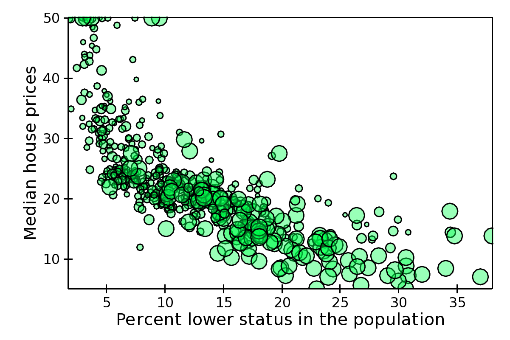{kind=link}
Colormapped Scatter Plot¶
Colormapped scatter plot. Additional information can be added to each point by setting a different color.
The color information is controlled by the
color_data
data source, and the
color_mapper
mapper. A large number of ready-to-use color maps are defined in the
module chaco.default_colormaps, including discrete color maps.
In addition to the parameters supported by a scatter plot, a colormapped scatter plot defines these attributes:
fill_alpha- Set the alpha value of the points.
render_methodSet the sequence in which the points are drawn. It is one of
- ‘banded’
- draw points by color band; this is more efficient but some colors will appear more prominently if there are a lot of overlapping points
- ‘bruteforce’
- set the stroke color before drawing each marker
- ‘auto’ (default)
- the approach is selected based on the number of points
In practice, there is not much performance difference between the two methods.
In this example plot, color represents nitric oxides concentration (green is low, red is high):
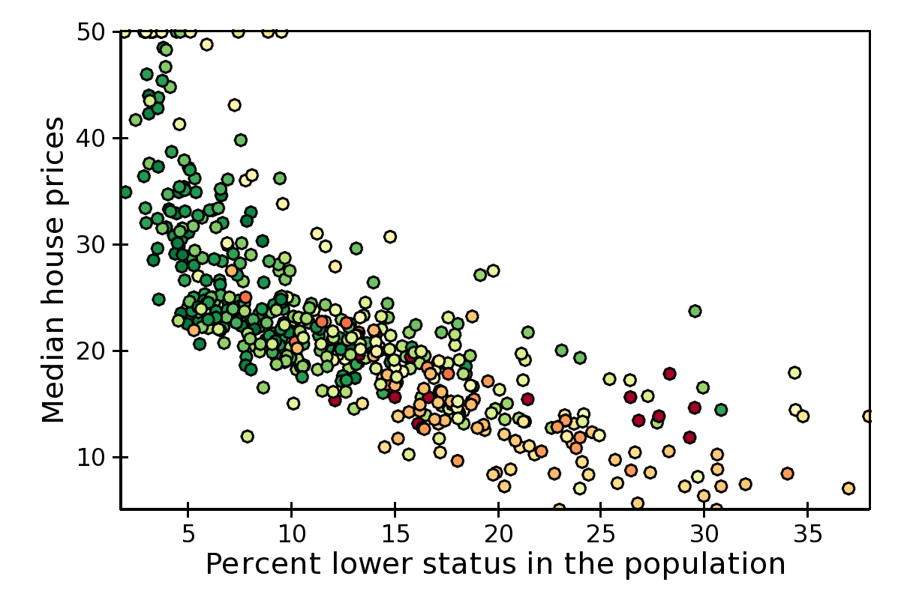{kind=link}
Using X,Y, color, and size we can display 4 variables at the time. In this example, color is again, and size is nitric oxides concentration:
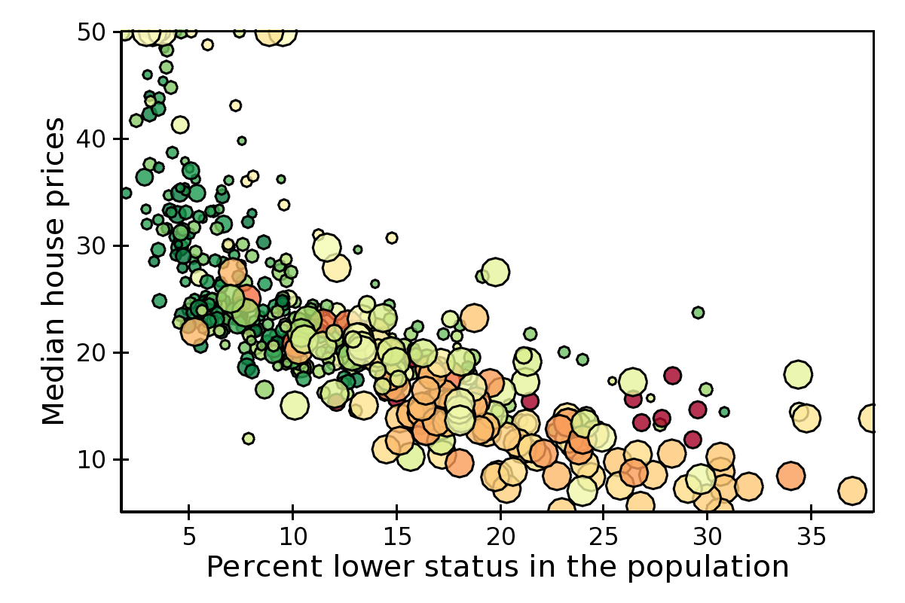{kind=link}
Candle Plot¶
A candle plot represents summary statistics of distribution of values for a set of discrete items. Each distribution is characterized by a central line (usually representing the mean), a bar (usually representing one standard deviation around the mean or the 10th and 90th percentile), and two stems (usually indicating the maximum and minimum values).
The positions of the centers, and of the extrema of the bar and stems are set with the following data sources
center_values- Value of the centers. It can be set to
None, in which case the center is not plotted.bar_minandbar_max- Lower and upper values of the bar.
min_valuesandmax_values- Lower and upper values of the stem. They can be set to
None, in which case the stems are not plotted.
It is possible to customize the appearance of the candle plot with these parameters
bar_color(alias ofcolor)- Fill color of the bar (default is black).
bar_line_color(alias ofoutline_color)- Color of the box forming the bar (default is black).
center_color- Color of the line indicating the center. If
None, it defaults tobar_line_color.stem_color- Color of the stems and endcaps. If
None, it defaults tobar_line_color.line_width,center_width, andstem_width- Thickness in pixels of the lines drawing the corresponding elements. If
None, they default toline_width.end_cap- If
False, the end caps are not plotted (default isTrue).
At the moment, it is not possible to control the width of the central bar and end caps.
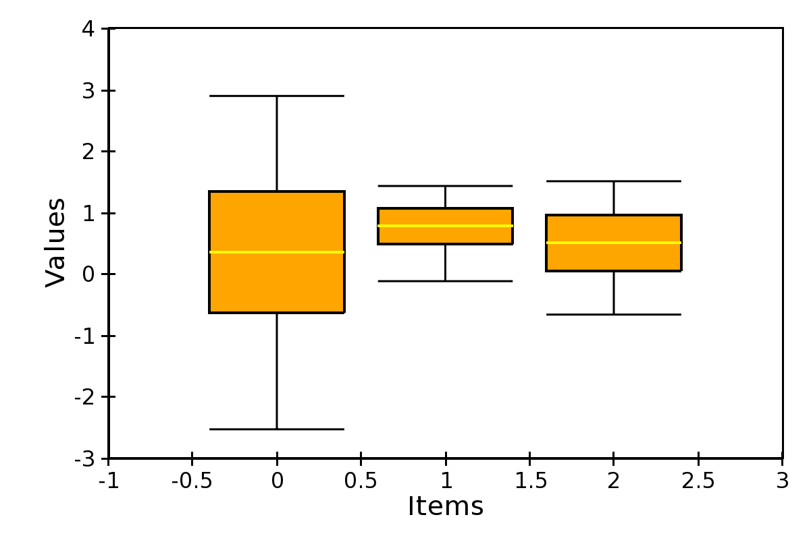{kind=link}
Errorbar Plot¶
A plot with error bars. Note that ErrorBarPlot
only plots the error bars, and needs to be combined with a
LinePlot if one would like to have
a line connecting the central values.
The positions of the extrema of the bars are set by the data sources
value_low and
value_high.
In addition to the parameters supported by a line plot, an errorbar plot defines these attributes:
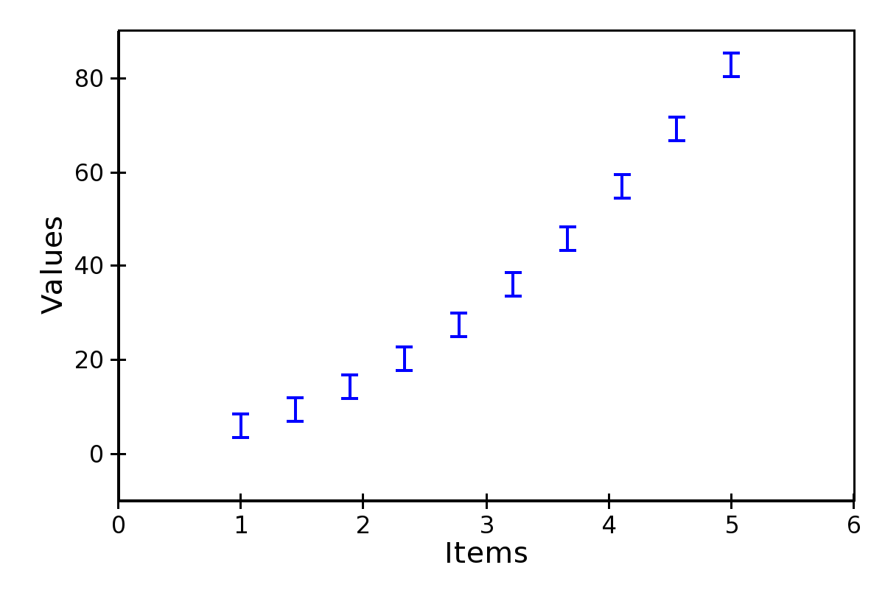
endcap_size- The width of the endcap bars in pixels.
endcap_style- Either ‘bar’ (default) or ‘none’, in which case no endcap bars are plotted.
{kind=link}
Filled Line Plot¶
A line plot filled with color to the axis.
FilledLinePlot defines
the following parameters:
fill_color- The color used to fill the plot.
fill_direction- Fill the plot toward the origin (‘down’, default) ot towards the axis maximum (‘up’).
render_style- The rendering style of the line plot, one of ‘connectedpoints’ (default), ‘hold’, or ‘connectedhold’ (see line plot for a description of the different rendering styles).
FilledLinePlot is a subclass of
PolygonPlot, so to set the thickness of the
plot line one should use the parameter
edge_width instead of
line_width.
{kind=link}
Multi-line Plot¶
A line plot showing multiple lines simultaneously.
The values of the lines are given by an instance of
MultiArrayDataSource, but the
lines are rescaled
and displaced vertically so that they can be compared without
crossing each other.
The relative displacement and rescaling of the lines is controlled
by these attributes of MultiLinePlot:
indexThe usual array data source for the index data.
yindexArray data source for the starting point of each line. Typically, this is set tonumpy.arange(n_lines), so that each line is displaced by one unit from the others (the other default parameters are set to work well with this arrangement).
use_global_bounds,global_min,global_max,These attributes are used to compute an “amplitude scale” which that the largest trace deviation from its base y-coordinate will be equal to the y-coordinate spacing.
If
use_global_boundsis set to False, the maximum of the absolute value of the full data is used as the largest trace deviation. Otherwise, the largest between the absolute value ofglobal_minandglobal_maxis used instead.By default,
use_global_boundsis set to False andglobal_minandglobal_maxto 0.0, which means that one of these value has to be set to create a meaningful plot.
scale,offset,normalized_amplitudeIn addition to the rescaling done using the global bounds (see above), each line is individually scaled bynormalized_amplitude(by default this is -0.5, but is normally it should be something like 1.0). Finally, all the lines are moved byoffsetand multiplied byscale(default are 0.0 and 1.0, respectively).
MultiLinePlot also defines the following
parameters:
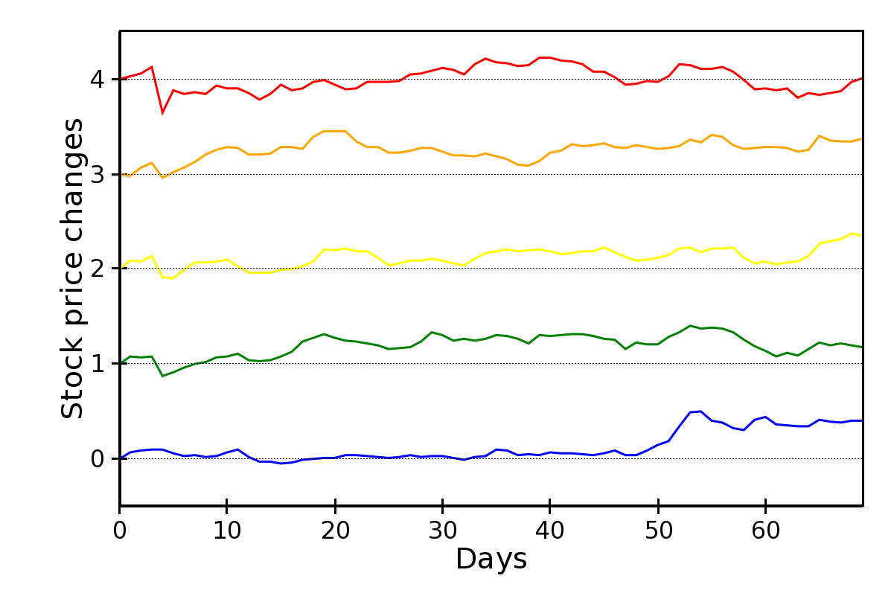
line_width,line_styleControl the thickness and style of the lines, as for line plots.
color,color_funcIfcolor_funcis None, all lines have the color defined incolor. Otherwise,color_funcis a function (or, more in general, a callable) that accept a single argument corresponding to the index of the line and returns a RGBA 4-tuple.
fast_clipIf True, traces whose base y-coordinate is outside the value axis range are not plotted, even if some of the data in the curve extends into the plot region. (Default is False)
{kind=link}
Image and 2D Plots¶
These plots display information as a two-dimensional image.
Unless otherwise stated, they are subclasses of
Base2DPlot.
The common interface for 2D plots is described in 2D Plots interface.
Image Plots¶
Plot image data, provided as RGB or RGBA color information. If you need to plot a 2D array as an image, use a colormapped scalar plot
In an ImagePlot, the index attribute
corresponds to the data coordinates of the pixels (often a
GridDataSource). The
index_mapper maps the data coordinates to
screen coordinates (typically using
a GridMapper). The value is the image itself,
wrapped into the data source class ImageData.
{kind=link}
A typical use case is to display an image loaded from a file.
The preferred way to do this is using the factory method
from_file() of the class
ImageData. For example:
image_source = ImageData.fromfile('capitol.jpg')
w, h = image_source.get_width(), image_source.get_height()
index = GridDataSource(np.arange(w), np.arange(h))
index_mapper = GridMapper(range=DataRange2D(low=(0, 0),
high=(w-1, h-1)))
image_plot = ImagePlot(
index=index,
value=image_source,
index_mapper=index_mapper,
origin='top left',
**PLOT_DEFAULTS
)
The code above displays this plot:
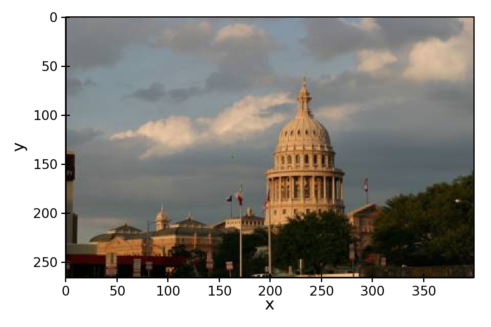{kind=link}
Colormapped Scalar Plot¶
Plot a scalar field as an image. The image information is given as a 2D array; the scalar values in the 2D array are mapped to colors using a color map.
The basic class for colormapped scalar plots is
CMapImagePlot.
As in image plots, the index attribute
corresponds to the data coordinates of the pixels (a
GridDataSource), and the
index_mapper maps the data coordinates to
screen coordinates (a GridMapper). The scalar
data is passed through the value attribute as an
ImageData source. Finally,
a color mapper maps the scalar data to colors. The module
chaco.default_colormaps defines many ready-to-use colormaps, including
discrete color maps.
For example:
xs = np.linspace(-2 * np.pi, +2 * np.pi, NPOINTS)
ys = np.linspace(-1.5*np.pi, +1.5*np.pi, NPOINTS)
x, y = np.meshgrid(xs, ys)
z = scipy.special.jn(2, x)*y*x
index = GridDataSource(xdata=xs, ydata=ys)
index_mapper = GridMapper(range=DataRange2D(index))
color_source = ImageData(data=z, value_depth=1)
color_mapper = Spectral(DataRange1D(color_source))
cmap_plot = CMapImagePlot(
index=index,
index_mapper=index_mapper,
value=color_source,
value_mapper=color_mapper,
**PLOT_DEFAULTS
)
This creates the plot:
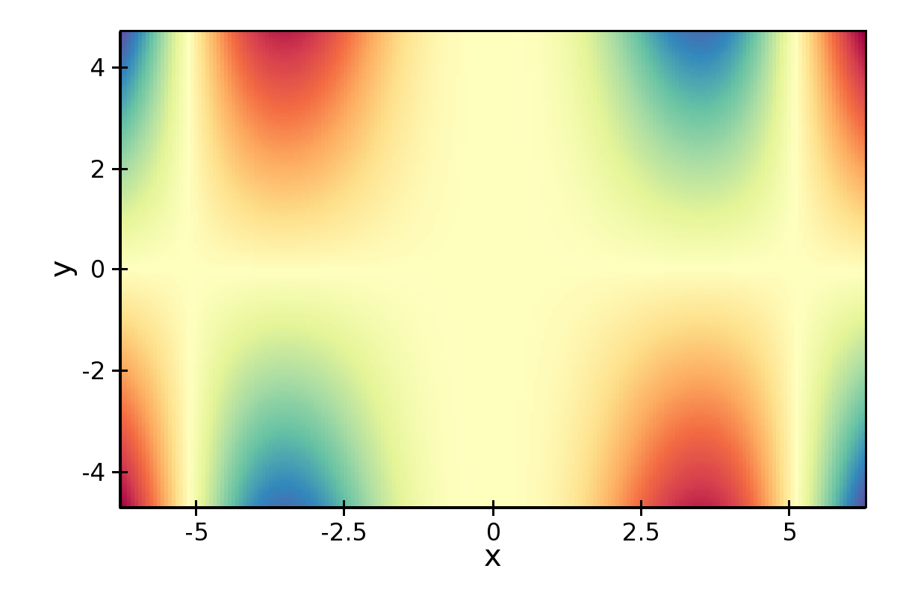{kind=link}
Contour Plots¶
Contour plots represent a scalar-valued 2D function, z = f(x, y), as a set of contours connecting points of equal value.
Contour plots
in Chaco are derived from the base class
BaseContourPlot, which defines these
common attributes:
levelslevelsis used to define the values for which to draw a contour. It can be either a list of values (floating point numbers); a positive integer, in which case the range of the value is divided in the given number of equally spaced levels; or “auto” (default), which divides the total range in 10 equally spaced levelscolors- This attribute is used to define the color of the contours.
colorscan be given as a color name, in which case all contours have the same color, as a list of colors, or as a colormap. If the list of colors is shorter than the number of levels, the values are repeated from the beginning of the list. If left unspecified, the contours are plot in black. Colors are associated with levels of increasing value.color_mapper- If present, the color mapper for the colorbar. TODO: not sure how it works
alpha- Global alpha level for all contours.
Contour Line Plot¶
Draw a contour plots as a set of lines. In addition to the attributes
in BaseContourPlot,
ContourLinePlot defines the following
parameters:
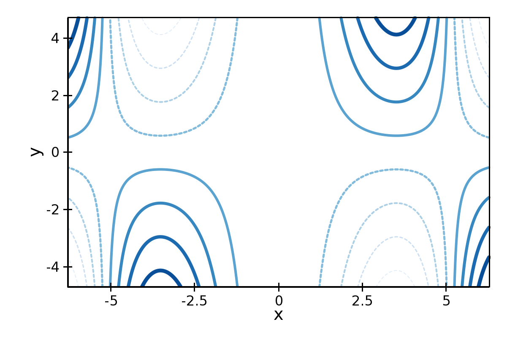
widths- The thickness of the contour lines. It can be either a scalar value, valid for all contour lines, or a list of widths. If the list is too short with respect to the number of contour lines, the values are repeated from the beginning of the list. Widths are associated with levels of increasing value.
styles- The style of the lines. It can either be a string that specifies the style for all lines (allowed styles are ‘solid’, ‘dot dash’, ‘dash’, ‘dot’, or ‘long dash’), or a list of styles, one for each line. If the list is too short with respect to the number of contour lines, the values are repeated from the beginning of the list. The default, ‘signed’, sets all lines corresponding to positive values to the style given by the attribute
positive_style(default is ‘solid’), and all lines corresponding to negative values to the style given bynegative_style(default is ‘dash’).
{kind=link}
{kind=link}
Polygon Plot¶
Draws a polygon given the coordinates of its corners.
The x-coordinate of the corners is given as the index data source,
and the y-coordinate as the value data source. As usual, their values
are mapped to screen coordinates by index_mapper and
value_mapper.
In addition, the class PolygonPlot defines
these parameters:
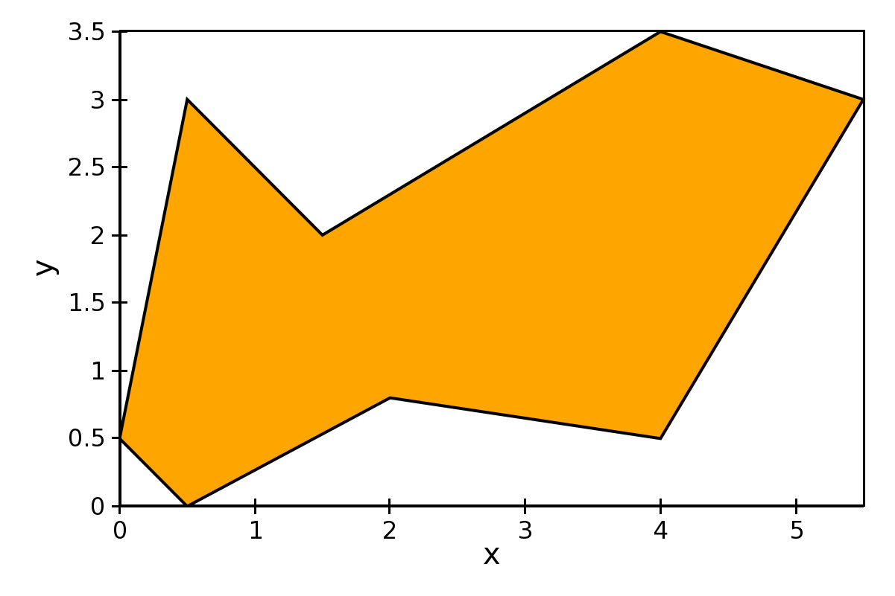
edge_color- The color of the line on the edge of the polygon (default is black).
edge_width- The thickness of the edge of the polygon (default is 1.0).
edge_style- The line dash style for the edge of the polygon, one of ‘solid’ (default), ‘dot dash’, ‘dash’, ‘dot’, or ‘long dash’.
face_color- The color of the face of the polygon (default is transparent).
{kind=link}
Other Plot Types¶
This section collects all plots that do not fall in the previous two categories.
Bar Plot¶
Draws a set of rectangular bars, mostly used to plot histograms.
The class BarPlot defines the attributes of
regular X-Y plots, plus the following parameters:
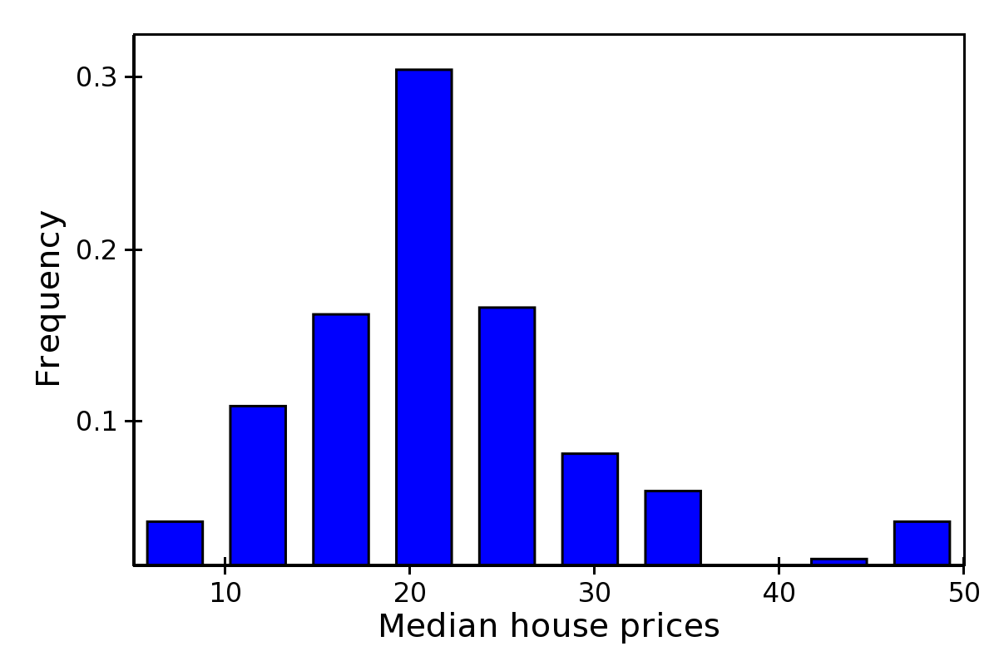
sorting_value- While
valueis a data source defining the upper limit of the bars,sorting_valuecan be used to define their bottom limit. Default is 0. (Note: “upper” and “bottom” assume a horizontal for the plot.)bar_width_type- Determines how to interpret the
bar_widthparameter. If ‘data’ (default’, the width is given in the units along the index dimension of the data space. If ‘screen’, the width is given in pixels.bar_width- The width of the bars (see
bar_width_type).fill_color- The color of the bars.
{kind=link}
Quiver Plot¶
This is a kind of scatter plot which draws an arrow at every point. It can be used to visualize 2D vector fields.
The information about the vector sizes is given through the data source
vectors, which returns an Nx2 array.
Usually, vectors is an instance of
MultiArrayDataSource.
QuiverPlot defines these parameters:
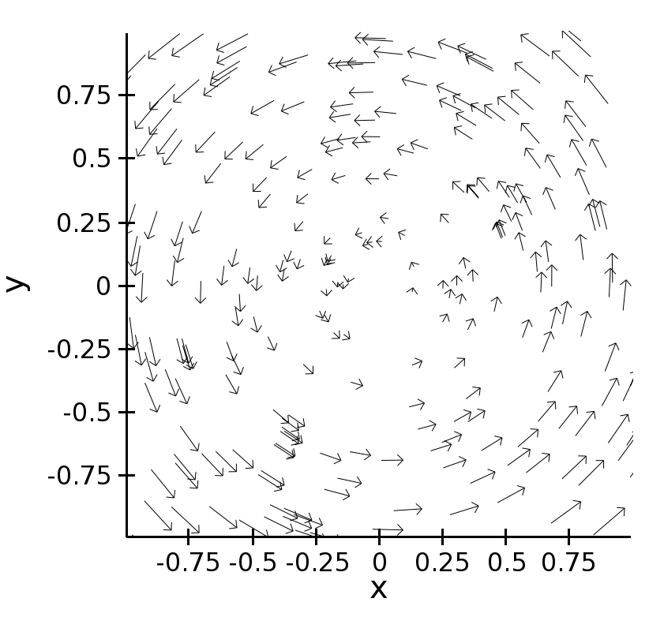
line_width- Width of the lines that trace the arrows (default is 1.0).
line_color- The color of the arrows (default is black).
arrow_size- The length of the arrowheads in pixels.
{kind=link}
Polar Plot¶
Display a line plot in polar coordinates.
The implementation at the moment is at a proof-of-concept stage.
The class PolarLineRenderer relies
on PolarMapper to map polar to cartesian
coordinates, and adds circular polar coordinate axes.
Warning
At the moment, PolarMapper does not do
a polar to cartesian mapping, but just a linear mapping. One needs to
do the transformation by hand.
The aspect of the polar plot can be controlled with these parameters:
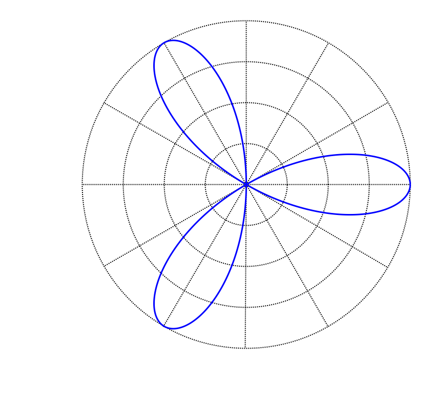
line_width- Width of the polar plot line (default is 1.0).
line_style- The style of the line, one of ‘solid’ (default), ‘dot dash’, ‘dash’, ‘dot’, or ‘long dash’.
color- The color of the line.
grid_style- The style of the lines composing the axis, one of ‘solid’,’dot dash’, ‘dash’, ‘dot’ (default), or ‘long dash’.
grid_visible- If True (default), the circular part of the axes is drawn.
origin_axis_visible- If True (default), the radial part of the axes is drawn.
origin_axis_width- Width of the radial axis in pixels (default is 2.0).
{kind=link}
Jitter Plot¶
A plot showing 1D data by adding a random jitter around the main axis.
It can be useful for visualizing dense collections of points.
This plot has got a single mapper,
called mapper.
Useful parameters are:
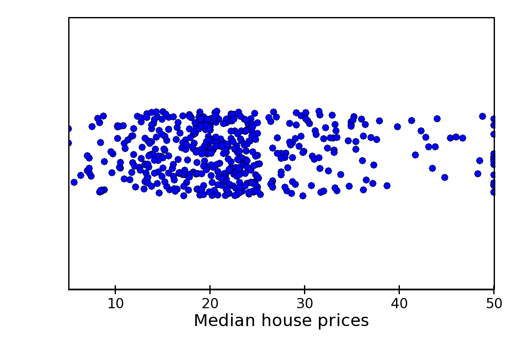
jitter_width- The size, in pixels, of the random jitter around the axis.
marker- The marker type, one of ‘square’(default), ‘circle’, ‘triangle’, ‘inverted_triangle’, ‘plus’, ‘cross’, ‘diamond’, ‘dot’, or ‘pixel’. One can also define a new marker shape by setting this parameter to ‘custom’, and set the
custom_symbolparameter to aCompiledPathinstance (see the filedemo/basic/scatter_custom_marker.pyin the Chaco examples directory).marker_size- Size of the marker in pixels, not including the outline (default is 4.0).
line_width- Width of the outline around the markers (default is 1.0). If this is 0.0, no outline is drawn.
color- The fill color of the marker (default is black).
outline_color- The color of the outline to draw around the marker (default is black).
{kind=link}
TODO: add description of color bar class